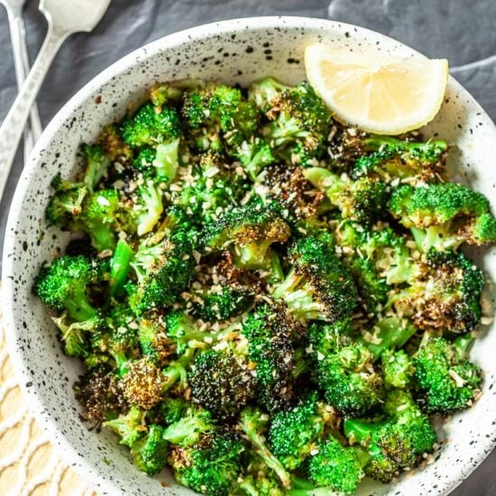

Air fried Broccoli

one of the most controversial food items in existance, Broccoli
perhaps one of my favortie foods of all time air fried broccoli has wormed its way into my heart
with how crispy it can be and how well it works with any kind of seasoning you put on it
Ingredients
- Broccoli Florets
- oil
- your prefered seasoning
Steps
- wash your florets
- coat your florets in your perfered oil
- add your perfered seasoning
- place a tablespoon of water into the air fryer
- than add the florets in at 400 for around 5 minutes